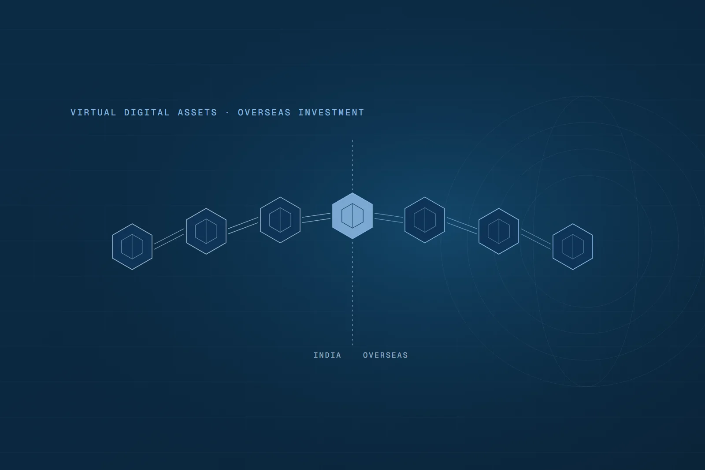

Technology & Data13 min read
Understanding Virtual Digital Assets (VDAs) in India and Overseas Investment Routes

Introduction
Before divulging directly into the topic let's first understand the following terms in relation to Virtual assets:
Virtual Assets: It is a digital representation of value of assets such as cryptocurrencies, non-fungible tokens (NFTs), gaming tokens.
Blockchain: It is a digital technology that records information in a secure, unchangeable way using a chain of blocks, where each block contains a list of transactions. Once data is added, it can't be changed or deleted. This system doesn't rely on a single company or server instead, it's shared across many computers, making it hard to hack, trace and useful for things like cryptocurrencies, smart contracts, and secure record-keeping.
Virtual Digital Asset ("VDA"): VDA in India refers to any digital item like cryptocurrency (e.g., Bitcoin, Ethereum) or NFT that is not real currency but can be traded or transferred electronically and is created using cryptographic technology.
Cryptocurrency: It is a type of digital money that uses blockchain technology to record transactions securely. A major concern is that it's often hard to trace because users stay anonymous and don't need to reveal their real identities. This makes it easier for illegal activities like money laundering, fraud, or black-market deals to happen without being easily tracked by authorities, which is a serious risk of using such virtual assets.
Regulatory Landscape of VDAs in India
In 2022, the Finance Act, 2022 introduced key amendments to the Income Tax Act, 1961 (ITA) which were aimed at creating a tax framework to regulate VDAs. These amendments provide clarity on the taxation of VDAs.
Accordingly, VDAs as an asset class and defined the term under Section 2 (47A) of the ITA to mean any information or code or number or token (not being Indian currency or foreign currency), generated through cryptographic means or otherwise, by whatever name called, providing a digital representation of value exchanged with or without consideration, with the promise or representation of having inherent value, or functions as a store of value or a unit of account including its use in any financial transaction or investment, but not limited to investment scheme and which can be transferred, stored or traded electronically. This definition also includes NFT as well.
Also this amendment come up with new section 115BBH wherein the income arising out of the transfer of the VDA will be taxed at the flat 30%, without any set off of the expenses (except the cost of acquisition of such VDA) and there will be no carry forward of such losses (if any) to the subsequent years, just like the taxation of the speculation business and its taxation. Further it was also proposed to amend the term "Property" for the purpose of 56(2)(x), and therefore gift of such VDA will also be taxed @ 30% under section 56(2)(x). Also, 1% TDS (Tax Deductible at Source under section 194S of the Income Tax Act) to be levied on crypto transactions above INR 10K with effect from July 1, 2022.
Prevention of Money Laundering Act, 2002 (PMLA)
Ministry of Finance ("MOF") introduced through notification define what comes under "Reporting entities" for the purpose of PMLA. Consequently, MOF has stipulated that the following activities, when conducted for or on behalf of another natural or legal person in the course of business, shall be categorized as a "designated business or profession":
(i) Exchange between virtual digital assets ("VDAs") (as defined under Section 2(47A) of the Income-tax Act, 1961) and fiat currencies;
(ii) Exchange between one or more forms of VDAs;
(iii) Transfer of VDAs;
(iv) Safekeeping or administration of VDAs or instruments enabling control over VDAs; and
(v) Participation in and provision of financial services related to an issuer's offer and sale of a VDA.
Hereafter, all persons engaged in the aforementioned activities are now considered "reporting entities" under the PMLA.
Under Anti Money Laundering (AML) Framework: VDAs service providers were brought into the ambit of Anti Money Laundering/Counter Financing of Terrorism (AML-CFT) framework under the provisions of the PMLA.
All VDA Service Providers operating in India (both offshore and onshore) are required to be registered with Financial Intelligence Unit ("FIU") IND as Reporting Entity.
As per the AML Guidelines:
- All Virtual digital assets service providers ("VDASPs") must show the employees screening procedure and training.
- Transactions in VDSAPs must be as per the sanction screening assigned by the UN and other regulatory agencies across the world.
- All VDSAPs and related wallets must be with proper due diligence including Counter Party.
- VDASPs, including their directors, officers and employees, must not disclose or tip-off to their client that a suspicious transaction report or related information is being reported to the FIU-IND.
Overseas Compliance Relating to VDA
Overseas Direct Investment ("ODI")
ODI refers to making an equity investment in a foreign entity engaged in legitimate business activities. ODI involves investment in equity capital (often unlisted) of a foreign entity, acquisition of more than 10% equity, or those granting control or significant influence [Foreign Exchange Management (Overseas Investment) Rules, 2022]. Investment by Indian residents in VDAs, in the digital asset space (Provided not directly trading in VDA like cryptocurrencies), is treated primarily under the ODI framework if the investment involves acquisition of unlisted equity or control in the foreign fund/entity as per Foreign Exchange Management (Overseas Investment) Rules, 2022.
Overseas Portfolio Investment ("OPI")
OPI covers minority, passive investments (less than 10%) in listed foreign companies. If the investment is minor, less than 10% equity, and in listed securities without control, it can be considered an OPI under FEMA Schedule II and SEBI's overseas investment guidelines [Schedule II, FEMA; SEBI (Alternative Investment Fund) Regulations].
Liberalized Remittance Scheme (LRS) Consideration
The LRS allows resident individuals to remit up to USD 250,000 per financial year abroad for investments and other permissible transactions, subject to RBI and bank due diligence [LRS Guidelines, RBI 2025].
Direct purchase of cryptocurrencies or VDAs overseas is prohibited under LRS and banks reject such remittances due to RBI restrictions [RBI FAQs on LRS].
Investment abroad by an individual investor technically falls within LRS remit limits only if the investment qualifies as overseas portfolio investment (OPI) without control (less than 10% holding) and the remittance purpose is correctly declared and accepted by the bank.
For investments qualifying as ODI (more than 10% or control), the transaction must follow ODI procedures; LRS cannot be used for such investments by individuals and separate RBI permission or compliance is required as per FEMA ODI rules.
Mandatory Declaration in ITR: The 'Schedule FA'
For resident Indians, declaring foreign assets is not optional. The Income Tax Return forms include a dedicated section called 'Schedule FA' (Foreign Assets) for this very purpose.
What is Schedule FA?
It is a mandatory schedule in the ITR for all individuals with 'Resident and Ordinarily Resident' status who hold any asset outside India at any point during the financial year.
Is Crypto Included?
Absolutely. Since the law now formally recognizes VDAs as 'assets', any cryptocurrencies or NFTs held on a foreign exchange (like Binance, KuCoin) or in a foreign-custodied wallet must be reported in Schedule FA.
What to Report?
You are required to provide detailed information about the assets, including:
The country where the asset is held. The name and address of the entity holding the asset (e.g., the foreign exchange). Peak balance of the VDA held during the year (in Indian Rupees). Closing balance at the end of the year (in Indian Rupees). Total investment cost of the assets held.
Indian Investor Compliance
If Individuals: LRS / OPI route subject to Authorized Dealer ("AD") Bank approval. If Companies / LLPs: ODI with FS check, approvals, RBI filings.
What Are AD Banks?
Commercial banks and financial organizations that have been granted special authorization by the Reserve Bank of India (RBI) to engage in foreign exchange operations are known as Authorized Dealer ("AD") banks. A bank cannot handle cross-border payments for investments, imports, or exports without this authorization.
AD banks are separated into several groups according to the range of tasks they are permitted to perform:
AD Category-I Banks are major commercial banks authorized to manage all transactions under FEMA, including export and import remittances, ECBs, and trade credits, primarily serving exporters.
AD Category-II Banks are smaller institutions with limited authorization. They can handle specific transactions like remittances for education, travel, medical expenses, or small personal transfers, but not full-fledged trade payments.
AD Category-III Banks: These are financial institutions such as select NBFCs. Their role is very restricted, typically dealing with foreign exchange for investment-related activities, such as portfolio investment schemes.
For broader perspective, AD Category-I banks are the only relevant type, since they are authorized to process export and import-related payments. This is why almost all export remittances in India flow through them.
How do we identify an AD Category-1 Bank?
The RBI publishes a list of all AD Category-1 Banks on its website. One can also find this information on individual banks' websites or by contacting their customer service departments.
Can an AD Category-1 Bank limit the amount of foreign currency we buy or sell?
There are restrictions on the amount of foreign currency that can be bought or sold through an AD Category-1 Bank. The RBI determines these restrictions, which are subject to changes occasionally.
AD Bank and Purpose Codes
An AD bank is the required channel for all foreign exchange payments to and from India. To monitor these transactions, the RBI mandates the use of specific purpose codes.
Documentation Requirements
For foreign payments on equity transactions, an Authorized Dealer (AD) bank mandates comprehensive documentation to comply with the Foreign Exchange Management Act (FEMA). Required documents may differ based on investment characteristics but generally include: a Foreign Inward Remittance Certificate (FIRC) issued to the recipient, Form FC-GPR submitted to the Reserve Bank of India (RBI) within 30 days for Indian companies allotting shares to foreign investors, a valuation certificate from a merchant banker, board resolutions authorizing share allotment, the updated shareholding pattern post-investment, transaction invoices or agreements, and a Unique Identification Number (UIN) if there has been a prior Overseas Direct Investment (ODI) transaction.
Digital Asset Sensitivity for Foreign Equity Payments
Digital assets introduce significant complications and sensitivities for foreign equity payments in India.
Regulatory Non-Recognition
The RBI does not recognize digital assets (such as cryptocurrencies) as legal tender for payments. This means an AD bank will not facilitate foreign payments for equity using digital assets. Any foreign payment in lieu of equity must be routed through official banking channels in fiat currency.
Indian Judiciary Stands on VDA
RBI via notification in April 2018 directed that RBI directed the entities regulated by it:
- Not to deal with or provide services to any individual or business entities dealing with or settling virtual currencies and
- To exit the relationship, if they already have one, with such individuals/business entities, dealing with or settling virtual currencies (VCs).
This RBI Directive effectively barred Indians to buy or sell cryptocurrencies or VDAs, creating widespread uncertainty in the cryptocurrency industry.
This directive was challenged in the case of Internet and Mobile Association of India Vs RBI as reported in (2020) 10 SCC 274, wherein the constitutional validity of the circular was criticized, observed as under:
6.170. But within a year, there was a volte-face and the final report of the very same Inter-Ministerial Committee, submitted in February 2019 recommended the imposition of a total ban on private crypto currencies through a legislation to be known as "Banning of Cryptocurrency and Regulation of Official Digital Currency Act, 2019". The draft of the bill contained a proposal to ban the mining, generation, holding, selling, dealing in, issuing, transferring, disposing of or using crypto currency in the territory of India. At the same time, the bill contemplated (i) the creation of a digital rupee as a legal tender, by the central government in consultation with RBI and (ii) the recognition of any official foreign digital currency, as foreign currency in India.
6.171. In case the said enactment (2019) had come through, there would have been an official digital currency, for the creation and circulation of which, RBI/central government would have had a monopoly. But that situation had not arisen. The position as on date is that VCs are not banned, but the trading in VCs and the functioning of VC exchanges are sent to comatose by the impugned Circular by disconnecting their lifeline namely, the interface with the regular banking sector. What is worse is that this has been done (i) despite RBI not finding anything wrong about the way in which these exchanges function and (ii) despite the fact that VCs are not banned.
6.172. As we have pointed out earlier, the concern of RBI is and it ought to be, about the entities regulated by it. Till date, RBI has not come out with a stand that any of the entities regulated by it namely, the nationalized banks/scheduled commercial banks/co-operative banks/NBFCs has suffered any loss or adverse effect directly or indirectly, on account of the interface that the VC exchanges had with any of them. As held by this court in State of Maharashtra v. Indian Hotel and Restaurants Association, there must have been at least some empirical data about the degree of harm suffered by the regulated entities (after establishing that they were harmed). It is not the case of RBI that any of the entities regulated by it has suffered on account of the provision of banking services to the online platforms running VC exchanges.
6.173. It is no doubt true that RBI has very wide powers not only in view of the statutory scheme of the 3 enactments indicated earlier, but also in view of the special place and role that it has in the economy of the country. These powers can be exercised both in the form of preventive as well as curative measures. But the availability of power is different from the manner and extent to which it can be exercised. While we have recognized elsewhere in this order, the power of RBI to take a pre-emptive action, we are testing in this part of the order the proportionality of such measure, for the determination of which RBI needs to show at least some semblance of any damage suffered by its regulated entities. But there is none. When the consistent stand of RBI is that they have not banned VCs and when the Government of India is unable to take a call despite several committees coming up with several proposals including two draft bills, both of which advocated exactly opposite positions, it is not possible for us to hold that the impugned measure is proportionate.
While this judgement is a relief for the Virtual Currency ("VC") industry, the SC actually has not commented on the legality of VC itself.
The Hon'ble Delhi High Court in the case of Arnav Gulati Vs SBI & Ors Second Appeal No. CIC/SBIND/A/2019/111324 wherein the petitioner has assailed the SBI action prohibiting the action of the UPI platform for dealing and settling the funds in Wazir X crypto Exchange, it was alleged that such action is unconstitutional as it infringes the fundamental right of trading under article 19(1)(g) and right of equality under article 14 of the Constitution. It was alleged in the petition that through its prohibition, the Bank is forcing its customers to use other payment deposit options which takes more time to get completed and extra charges like convenience fees, GST charges or service charges are charged, which makes it difficult for the retail investors and users to get the funds on time.
Recently, the Madras High court in the case of Zanmal Labs Pvt Ltd Vs Bitcipher Labs LLP (Comm) Arbitration Petition (L) No. 11646 of 2025 by a single bench N. Anand Venkatesh J. stated that there can be no doubt that "Crypto currency" is a property. It is not a tangible property nor a currency. However, it is a property which is capable of being enjoyed and possessed (in a beneficial form). It is capable of being held in trust.
Conclusion
As the market for Virtual Digital Assets (VDAs) continues to expand rapidly, it is essential for India to prioritize national interests while embracing technological growth. The evolving nature of digital assets presents both opportunities and risks, including concerns around investor protection, financial stability, and misuse of funds. Therefore, India needs to establish a clear and stringent regulatory framework for VDAs to ensure transparency, prevent confusion, and maintain control over this emerging sector. A well-defined regulation will not only safeguard the economy but also promote responsible innovation in the digital asset space.
Reference
- Internet and Mobile Association of India vs. Reserve Bank of India, Writ Petition (Civil) No. 528 of 2018
- IT ACT 1961
- PMLA 2002
- $https://ijirl.com/wp-content/uploads/2024/07/cryptocurrencies-unraveling-regulatory-realities.pdf/$
- $https://www.azbpartners.com/bank/virtual-currency-regulation-review2025/#footnotes_entry_7998004942886772/$
- $https://database.taxsutra.com/articles/304af45d19d3b6029a6278934fe2cf/expert_article/$
This article is for general information only. It is not legal advice and does not create a lawyer–client relationship. For advice on your situation, please contact us.